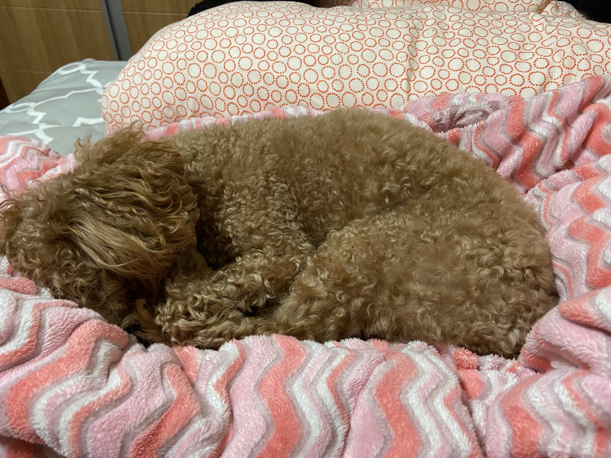

title는 주소를 바꺼준다.
- html
- css
- JavaScript
- 1. 주지영
- 2. 포도
- 3. 좋다
오늘아침 눈을 뜨고 나서
밥을 먹지 않았습니다.
왜냐면 치킨이 남았었거든요.
밥은 할까말까 고민했지만 하지않고 남은 치킨 4조각을 해치웠습니다.
찌낀을 해치운다음 머할까 고민해서 방을 치우고 정리하고 방은 안닦구 나왔습니다
힘들거든요 ~
그리고 집에와서 게임 쪼오오오오끔하구 웹페이지 공부를 시작했습니다.
웹페이지는 아톰 에디터를 사용하였고
p태그와 br 태그를 배웠습니다.
p태그는 단락을 기준으로 줄을 묶어주고
br태그는 줄바꿈입니다.
웹사이트에 검색이 될때는 글자 사이즈를 키우는 태그보다 h1 같은 태그를 사용하면 좋다고 한다
다음은 이미지입니다. (img src="폴더제목" width="사이즈")
이런식이다.
또 li는 list 약자로 앞에 쩜쩜 표시해준다. li태그를 쓸때 윗줄에 ul 리스트 마지막줄엔
/ul 을 쓴다. ordered list, unordered list
컨트롤 클릭을하면 커서가 여러개 되는데 한방에 여러개 쓸수 있어 참 편리하다.
새탭은 target="_blank"
a는 링크거는거 ex) (a href="주소 복붙" target="_blank" title="html5")
